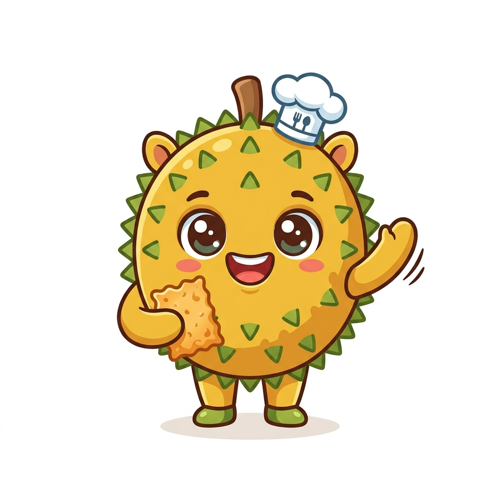

Kerupuk inovatif dari limbah biji durian — gurih, renyah, dan penuh manfaat. Solusi kreatif untuk lingkungan yang lebih bersih.
Terobosan di sektor agroindustri yang mengolah limbah biji durian menjadi camilan kerupuk bernilai ekonomi tinggi.
Berlokasi di Kaliwates, Jember, usaha kami berkomitmen pada prinsip keberlanjutan lingkungan dengan memanfaatkan limbah yang sebelumnya tidak terpakai dari mitra lokal. Kami menghadirkan solusi kreatif untuk mengurangi pencemaran tanah akibat limbah biji durian di Kabupaten Jember.
Mengubah limbah biji durian menjadi produk bernilai ekonomi tinggi, mengurangi pencemaran tanah.
Didukung oleh 9 mahasiswa Manajemen Agroindustri Politeknik Negeri Jember yang berdedikasi.
Bangga berbasis di Jember dengan bahan baku dari mitra lokal Rumah Durian Pakusari.
Camilan renyah inovatif dari biji durian yang kaya nutrisi dan menggugah selera.
Gurih alami dengan cita rasa autentik biji durian yang telah diolah sempurna
Perpaduan renyah dan pedas yang menggugah selera, bikin nagih!
Tinggi kandungan karbohidrat, serat, dan mineral alami dari biji durian.
Menggunakan teknologi dehydrator untuk tekstur renyah dan mengembang sempurna.
Dikemas dalam ukuran 50gr dengan desain yang informatif dan menarik.
Proses produksi higienis dan terkontrol dari awal hingga akhir.
Setiap keping Duri Crackers melalui tahapan produksi yang terkontrol dan higienis.
Biji durian dibersihkan secara menyeluruh dan dikupas kulitnya untuk mendapatkan bahan baku terbaik.
Biji dikukus hingga matang sempurna, lalu dihaluskan sebagai bahan dasar adonan kerupuk.
Adonan dicampur dengan bumbu alami pilihan dan direbus hingga menyatu sempurna.
Adonan didinginkan, dipotong tipis dengan presisi, lalu dikeringkan secara alami.
Digoreng hingga renyah dan mengembang sempurna, lalu dikemas secara higienis dalam kemasan modern 50gr.
Data-driven approach untuk memastikan keberlanjutan dan pertumbuhan usaha.
Terfokus pada mahasiswa, remaja, dan masyarakat lokal yang menyukai camilan praktis dengan harga kompetitif Rp7.000 per kemasan.
Didukung oleh tim yang terdiri dari 9 mahasiswa Manajemen Agroindustri Politeknik Negeri Jember yang kompeten.
Bekerja sama dengan Rumah Durian Pakusari yang menjamin pasokan bahan baku 5-10 kg biji durian setiap harinya.
Berdasarkan analisis keuangan, proyek ini memiliki Benefit and Cost Ratio sebesar 2,3 — menunjukkan bahwa usaha ini sangat layak untuk dikembangkan.
Kami menargetkan Duri Crackers untuk menjadi produk unggulan agroindustri Jember yang menasional.
Pengurusan sertifikasi untuk jaminan keamanan dan kepercayaan konsumen.
Pengembangan varian baru seperti Daun Jeruk dan rasa inovatif lainnya.
Perluasan penjualan melalui marketplace digital dan toko pusat oleh-oleh.

Rasakan sensasi renyahnya kerupuk dari biji durian. Pesan sekarang dan nikmati camilan sehat yang ramah lingkungan!